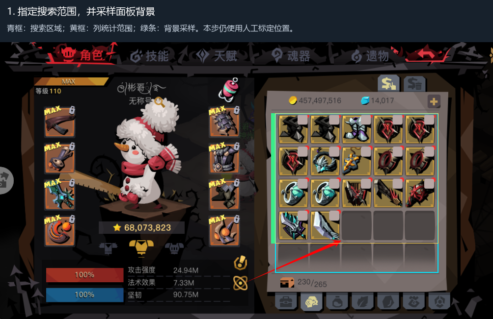
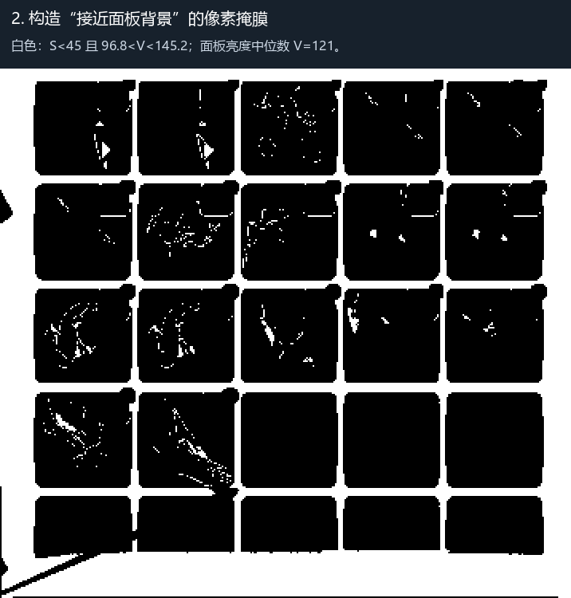
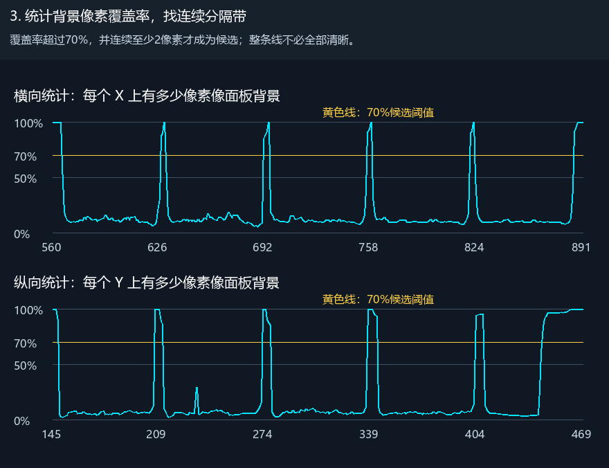
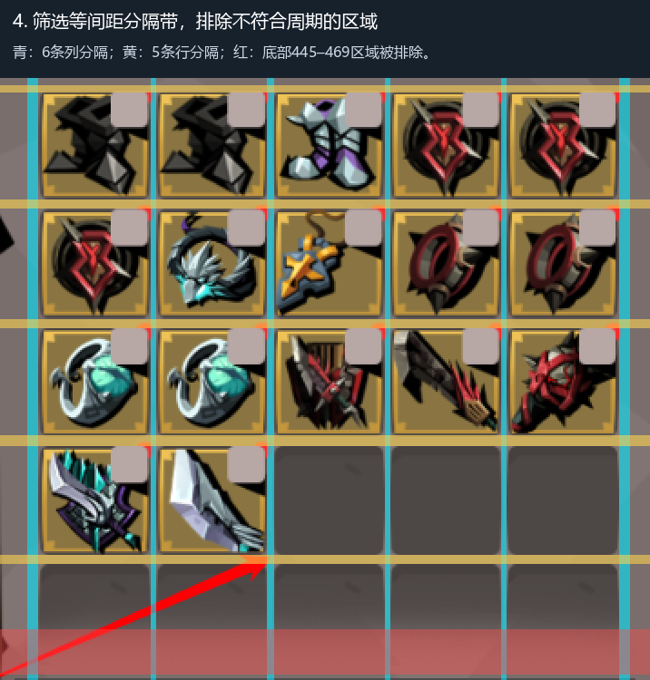
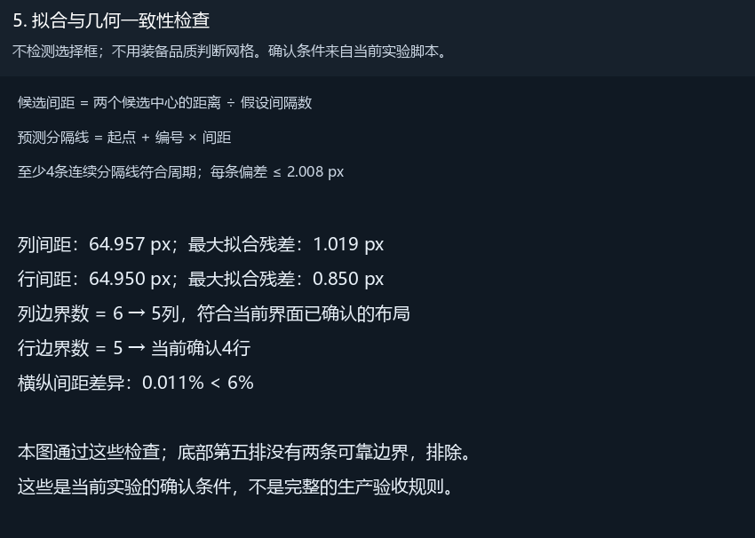
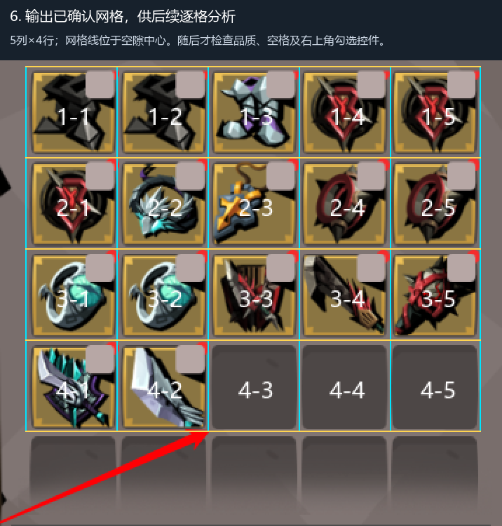

使用用户提供的末页截图；不操作游戏。搜索区域和背景条仍需人工标定。
青框：搜索区域；黄框：列统计范围；绿条：背景采样。本步仍使用人工标定位置。

白色：S<45 且 96.8 
覆盖率超过70%，并连续至少2像素才成为候选；整条线不必全部清晰。

青：6条列分隔；黄：5条行分隔；红：底部445–469区域被排除。

不检测选择框；不用装备品质判断网格。确认条件来自当前实验脚本。

5列×4行；网格线位于空隙中心。随后才检查品质、空格及右上角勾选控件。
